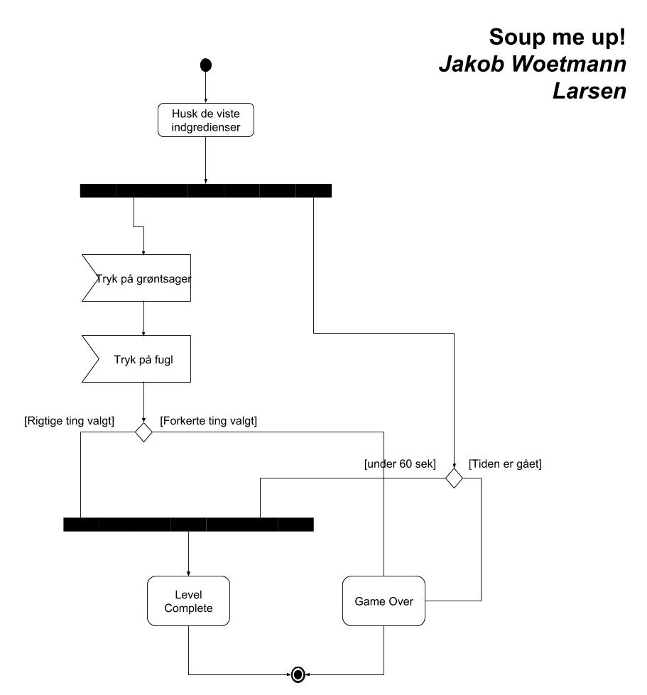
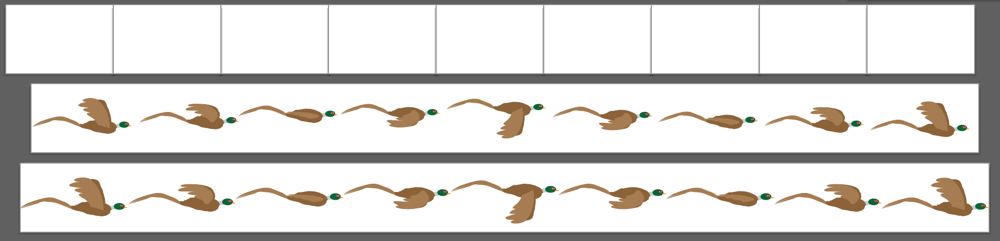

Opgave i animation og Adobe Illustrator
Formålet med denne opgave, er at få kendskab til Adobe Premire Pro og til optagelse af lyd. Det er en øvelse inden næste opgave, der indeholder en profilvideo.
Spilnavn: Soup me up!
Din spil-ide skrevet kort som en pitch:
Spillet er et simpelt spil i børnehøjde, der skal give en forståelse for hvor madvare kommer fra (ud
over køleksabet) og også fortælle en historie om at man skal passe på hvad man spiser.
Styletile og moodboard
Jeg blev inspireret af spillet med kaninen og gulerødderne vi blev vidst I starten af forløbet.
Style endte ud som den gjorde, på baggrund af mine evner i illustrator. Det var simpelthen
Fejl og mangler
Spillet mangler lydeffekter og en settingsmenu hvor lyde kan aktiveres og deaktiveres. Derudover mangler jeg at lave en "replay" knap/funktion i slutningen af spillet.
Dette er diagrammet jeg lavede inden jeg startede på spillet. Win/loose er styret af tid og en kombination klik. Intentionen var at grøntsagerne skulle komme frem, der efter forsvinde og så skulle man huske placeringer, men den ide droppede jeg igen.
Jeg startede med at lave én fasan i hver deres artboard, for derefter at sætte dem i ét artboard. Jeg satte det ind i min sprite og fandt ud af at størrelsen skulle redigeres lidt.
